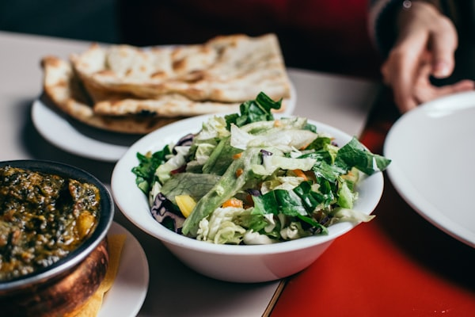
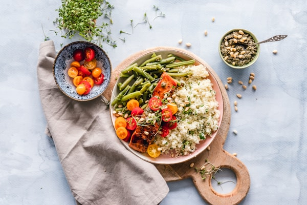
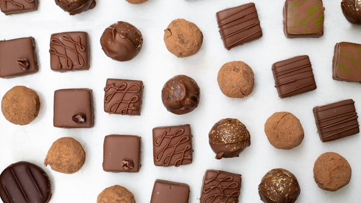
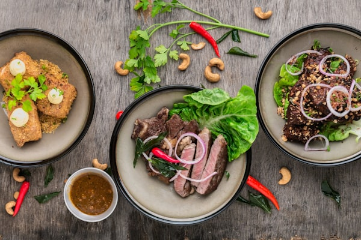
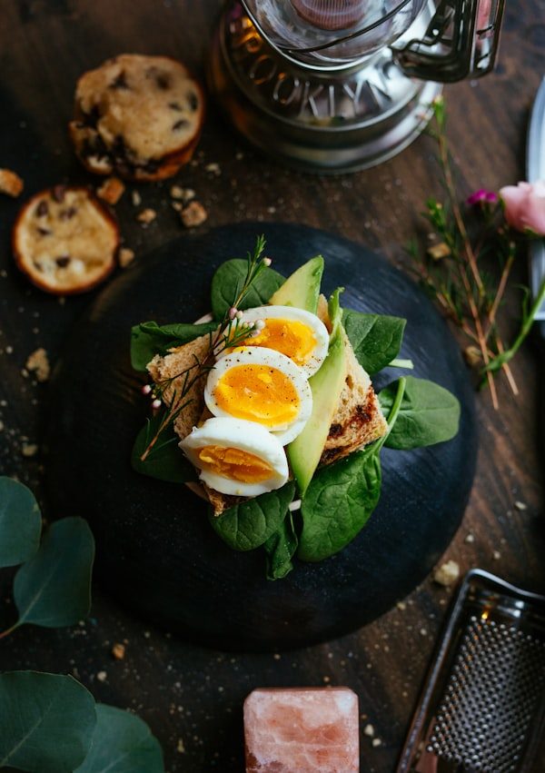

Broad Combined Genetic Risk:
Energy Metabolism, Appetite & Inflammation
Pattern P029 ｜ Carbohydrate Metabolism × Protein Utilization × Satiety × Inflammation
Estimated value based on the Harris-Benedict equation (Male, 85kg, 178cm, 49 y.o.)
BMR (Basal Metabolic Rate) is the calories your body burns at rest. To lose weight, you need to calculate your TDEE (Total Daily Energy Expenditure), which accounts for your activity level.
TDEE is automatically calculated and updated daily in the "Zuboran" app.
Genetic Risk Analysis
Polygenic Test: Overall Findings
Your polygenic test results show genetic tendencies related to carbohydrate metabolism and satiety regulation. You are particularly susceptible to influences from carbohydrate intake and appetite control, making dietary and lifestyle adjustments important for weight management. Fat storage and protein utilization show relatively mild tendencies, while inflammation susceptibility shows a moderate risk level. Based on these overall genetic tendencies, it is recommended to use the following advice to optimize your daily life.
5 Genetic Risk Categories: Detailed Analysis
Genetic Tendency: Carbohydrate Metabolism
Analysis of multiple genetic polymorphisms related to carbohydrate metabolism reveals a genetic tendency affecting insulin sensitivity and blood glucose regulation. Variants in insulin secretion-related genes (TCF7L2, KCNQ1) and glucose uptake-related genes (PPARG, SLC2A2) indicate a tendency for a larger blood glucose response after carbohydrate intake. Choosing low-GI foods and optimizing meal order are considered effective approaches to suppress sharp post-meal blood glucose spikes.
Genetic Tendency: Satiety / Appetite Regulation
Analysis of appetite regulation genes reveals a genetic tendency affecting satiety signal transmission. Variants were confirmed in appetite center genes (FTO, MC4R) and satiety hormone genes (LEP, LEPR), indicating a tendency for post-meal satisfaction to fade quickly. Splitting meals into smaller portions and consuming dietary fiber and protein first are recommended strategies to extend the duration of satiety.
Genetic Tendency: Inflammation Susceptibility
A moderate genetic tendency was identified among genes associated with inflammatory response. Polymorphisms were confirmed in inflammatory cytokine genes (IL6, TNF) and inflammation marker genes (CRP, APOE). Since chronic low-grade inflammation may contribute to insulin resistance, it is recommended to actively consume anti-inflammatory foods (fatty fish, vegetables, fermented foods) and maintain moderate exercise habits.
Genetic Tendency: Fat Storage
Analysis of fat storage-related genes reveals a relatively mild genetic tendency. Slight influences on thermogenesis genes (UCP1, ADRB3) were noted, but overall fat storage risk is within a manageable range. Since basal metabolic rate may tend to decrease slightly, establishing regular aerobic exercise habits is effective for preventing fat accumulation.
Genetic Tendency: Protein Utilization
A mild influence was confirmed among genes related to protein utilization efficiency. Polymorphisms in muscle fiber genes (ACTN3, MSTN) and growth factor/nutrient receptor genes (IGF1, VDR) were identified, but their overall impact on protein utilization efficiency is limited. Maintaining appropriate protein intake and combining it with Vitamin D and B vitamins can optimize utilization efficiency.
Dietary Advice
Dietary optimization based on your genetic tendencies
Key dietary improvements based on your genetic tendencies in carbohydrate metabolism and appetite control.

Carbs: "Quality" and "Timing" Matter More Than "Quantity"
For those with high carbohydrate metabolism risk, "quality" and "timing" matter more than "quantity." Extreme carb restriction (under 50g/day) causes ketosis — while weight drops short-term, it leads to muscle loss, lower basal metabolism, and is the #1 cause of rebound. Carriers of the TCF7L2 risk allele tend to have delayed first-phase insulin secretion, making low-GI food choices key. White rice has a GI of 84, while brown rice drops to 56 and mixed barley rice to ~50. Swapping white bread (GI 95) for whole wheat bread (GI 50) can suppress post-meal glucose peaks by ~40%, according to studies.
Key Point
Don't eliminate carbs — replace "white carbs" with "brown carbs." Aim for foods with a GI of 55 or below.
Action Steps
Gradually switch white rice to brown rice or barley rice
Choose whole grain bread and noodles
Aim for 40-60g of carbohydrates per meal (about 3/4 cup of cooked rice)
Related genes: TCF7L2, KCNQ1, SLC2A2 (Carbohydrate Metabolism [High])

Ideal PFC Balance and Plate Proportions
The ideal PFC balance for those with high carbohydrate metabolism risk differs from the general guideline (C:60%, P:15%, F:25%). Based on your genetic tendencies, limiting carbohydrates to 40–45% of total calories, with protein at 25–30% and fat at 25–30%, is recommended. Specifically, limit rice to about 150g (approx. 55g carbs) and ensure adequate protein and quality fats in your side dishes. A "plate model" following the Japanese one-soup-three-dishes style, with protein (palm-sized serving of meat/fish) as the main dish and two vegetable sides for fiber and vitamins, works best.
Key Point
Divide your plate into 4: (1) Protein (1/4), (2) Vegetables (2/4), (3) Carbohydrates (1/4). Following this ratio naturally balances your PFC intake.
Action Steps
Mentally divide your plate into 4 sections at each meal
Fill half your plate with vegetables first
Allocate 1/4 for protein and 1/4 for carbohydrates
Related genes: TCF7L2, PPARG (Carb Metabolism [High], Protein Utilization [Slight])

Veggie-First & Carbs-Last Strategy
Simply changing the order of eating dramatically alters post-meal blood glucose patterns. Research from the Kansai Electric Power Medical Research Institute found that eating in the order of vegetables → protein → carbohydrates reduced post-meal blood glucose peaks by ~40% and insulin secretion by ~30% compared to eating carbohydrates first. For those with high carbohydrate metabolism risk, this "Veggie-First & Carbs-Last" strategy is the most evidence-based dietary method to improve blood glucose control without medication. Since satiety risk is also high, filling the stomach with fiber and protein first naturally reduces the amount consumed by the time you reach carbohydrates.
Key Point
The golden rule of eating order: (1) Soup (warm up the stomach) → (2) Vegetables & mushrooms → (3) Meat, fish, eggs → (4) Rice, bread, noodles last
Action Steps
Start with miso soup or broth (3 min)
Eat salad or simmered vegetables (5 min)
Eat the main dish (protein), then finally start on rice or bread
Related genes: TCF7L2, GCK (Carb Metabolism [High], Satiety [High])

Planned Snacking to Prevent Binge Eating
For those with high satiety/appetite regulation risk, "cutting out snacks" backfires. When meal gaps exceed 5 hours, ghrelin (hunger hormone) spikes sharply, leading to overeating at the next meal. Since leptin (satiety hormone) signaling is genetically weak, once you enter "starving mode," it's hard to stop. Instead, incorporating planned snacks (150-200 kcal) twice a day stabilizes blood sugar and prevents binge eating. The "quality" of snacks matters most. Choose high-protein, low-carb options (boiled eggs, 20g nuts, Greek yogurt, cheese) to stimulate GLP-1 secretion and maintain satiety until the next meal.
Key Point
Snacks aren't the enemy of restraint — they're your ally against binge eating. Plan high-protein snacks at 10 AM and 3 PM.
Action Steps
Schedule snack time at 10 AM and 3 PM
Choose from: boiled eggs, nuts, or yogurt
Keep each snack under 150-200 kcal
Related genes: MC4R, LEP, LEPR (Satiety [High], Carb Metabolism [High])
Other categories are in good condition
For items related to fat storage, protein utilization, and inflammation susceptibility, maintain your current lifestyle habits.
Lifestyle Advice
Lifestyle optimization based on your genetic tendencies
Key lifestyle improvements to enhance metabolic efficiency and health management.
Post-Meal Walking for Blood Sugar Control
For those with high carbohydrate metabolism risk, aerobic exercise is the most powerful tool for blood sugar control. During exercise, muscles activate "GLUT4 translocation" — absorbing glucose without depending on insulin — directly compensating for the genetic tendency of weak insulin secretion. Most effective is walking within 30 minutes after a meal (15-20 minutes). This suppresses the post-meal glucose peak by ~25%, burning excess glucose as energy before it converts to fat. Maintaining moderate-intensity aerobic exercise 3-4 times/week, 30 minutes per session (a pace where you can still hold a conversation), has been reported to improve insulin sensitivity by ~20%.
Key Point
The most effective timing is "within 30 minutes after eating." No workout clothes needed — just 15 minutes of walking nearby.
Action Steps
Make it a habit to take a 15-minute walk after lunch
Extend weekend walks to 30 minutes
Once comfortable, establish a habit of 3-4 times per week
Related genes: TCF7L2, SLC2A2 (Carb Metabolism [High], Fat Storage [Slight])

Muscles Are the Body's Largest "Glucose Storage"
Muscles are the body's largest "glucose storage." Each 1kg increase in muscle mass raises resting glucose uptake by ~50 kcal/day and boosts basal metabolism by ~13 kcal/day. For those with high carbohydrate metabolism risk, strength training is the most fundamental strategy to "expand the reservoir for consumed carbs." The quadriceps (front thigh) and gluteus maximus (buttocks) are the largest muscle groups, and training them dramatically improves glucose processing capacity. Bodyweight training is sufficient — just 3 exercises (squats, lunges, calf raises), 10 reps × 2 sets, 2-3 times/week has been shown to improve insulin sensitivity by ~25% after 12 weeks.
Key Point
Train your "thighs" and "glutes" to expand your carb reservoir. Start with squats: 10 reps × 2 sets.
Action Steps
10 squats × 2 sets (before morning tooth brushing)
Lunges (5 reps each leg × 2 sets)
Target 2-3 times/week; increase reps as you get comfortable
Related genes: ACTN3, MSTN (Protein Utilization [Slight], Carb Metabolism [High])
Sleep Deprivation: The Most Dangerous Appetite Stimulant
For those with high satiety risk, sleep deprivation is "the most dangerous appetite stimulant." Research shows that just one night of poor sleep (4 hours) increases ghrelin (hunger hormone) by 28% and decreases leptin (satiety hormone) by 18%. For those already genetically predisposed to weak leptin signaling, this results in an average of 385 kcal extra calories consumed the next day — equivalent to ~1.5 kg of weight gain per month if sustained. Moreover, sleep deprivation reduces prefrontal cortex function, making it harder to suppress impulsive eating behaviors (binging, sugar cravings). Securing 7-8 hours of quality sleep is the highest priority task, even above dietary management and exercise.
Key Point
Less than 7 hours sleep is equivalent to "eating 2 extra rice balls (385kcal) every day." Strictly aim to be in bed by 11 PM.
Action Steps
Set a fixed bedtime of 11 PM
Switch phone to Night Mode 1 hour before bed
Keep bedroom temperature at 18-20°C (64-68°F)
Related genes: LEP, LEPR, MC4R (Satiety [High], Inflammation [Moderate])

Stress is "Invisible Carbohydrates"
The stress hormone (cortisol) negatively affects both carbohydrate metabolism and appetite control. When cortisol rises, glucose release from the liver is promoted (gluconeogenesis) and insulin sensitivity decreases. Simultaneously, it stimulates the reward system and increases cravings for high-calorie foods — triggering emotional eating. Those with high satiety risk have a genetic tendency to be particularly susceptible to stress-induced appetite increase, making stress management as important as dietary management. Research shows that just 5 minutes of deep breathing per day (4-7-8 technique: inhale 4s, hold 7s, exhale 8s) can reduce cortisol levels by ~15%.
Key Point
Stress is "invisible carbs." Practice the 4-7-8 breathing technique 3 times a day (morning, noon, before bed) to prevent appetite surges.
Action Steps
Practice 4-7-8 breathing right after waking up (5 minutes)
Do one set before lunch as well
Practice in bed before sleeping
Related genes: IL6, TNF (Inflammation [Moderate], Satiety [High])
The Tight Connection Between Body Clock and Metabolism
The body clock (circadian rhythm) and metabolic function are tightly linked. Irregular meal times disrupt the pancreas's insulin secretion rhythm, and research shows the same food can cause up to 2x the blood glucose rise. Late-night eating (after 9 PM) is particularly detrimental for those with high carbohydrate metabolism risk, as melatonin reduces insulin sensitivity to ~50% of daytime levels. Eating breakfast at the same time every day resets the body clock and optimizes metabolic efficiency. The ideal meal schedule is breakfast at 7 AM, lunch at 12 PM, dinner at 6 PM (5-hour intervals).
Key Point
Finish dinner by 7 PM. The body's carb-processing capacity at night is only half of what it is during the day.
Action Steps
Fix your breakfast time to the same time every day
Finish dinner by 7 PM
Completely avoid snacking after dinner
Related genes: TCF7L2, KCNQ1 (Carbohydrate Metabolism [High])
Other categories are in good condition
For items related to fat storage, protein utilization, and inflammation susceptibility, maintain your current lifestyle habits.
Exercise Advice
Exercise program based on your genetic tendencies
Practical exercise tips effective for metabolic improvement and weight management.

Efficient Fat Burning in the Fat-Burn Zone
The key to maximizing fat burning is "intensity" and "timing." Exercising at 60-70% of maximum heart rate (fat-burn zone) uses fat most efficiently as an energy source. Formula: (220 - age) × 0.6-0.7; for a 49-year-old, the target is 103-120 bpm. 30 minutes of walking in this zone burns approx. 150-200 kcal of fat. Post-meal aerobic exercise is especially effective for those with high carbohydrate metabolism risk — burning the post-meal blood glucose surge prevents excess insulin secretion and stops sugar from converting to fat. Fasted exercise before breakfast is NOT recommended due to the risk of cortisol increase and muscle breakdown.
Key Point
"A pace where you can hold a conversation" is the fat-burn zone indicator. A 30-minute post-meal walk is most efficient.
Action Steps
Step outside 30 minutes after eating
Walk at a pace where you're slightly breathless but can still talk
Aim for 15-30 minutes (extend as you get comfortable)
Related genes: UCP1, ADRB3 (Fat Storage [Slight], Carb Metabolism [High])

Diet Without Strength Training = "30% Muscle Loss"
Maintaining muscle mass during a diet is the most important factor for preventing rebound. When reducing weight through diet alone, approximately 25-30% of the weight lost comes from muscle loss, lowering basal metabolism and making rebound more likely. Combining strength training limits muscle loss to a minimum (under 5-10%) while prioritizing fat loss. For those with high carbohydrate metabolism risk, muscles serve as a "glucose sponge" — maintaining muscle mass preserves the capacity to process dietary carbohydrates. Beginners should start with bodyweight exercises, focusing on large muscle groups (legs, back, chest), stimulating each area twice a week.
Key Point
Dieting without strength training means "30% of what you lose is muscle." Always pair diet with strength training.
Action Steps
Start with 3 exercises: squats, push-ups, and planks
10 reps × 2 sets each, 2-3 times per week
Consume 20g of protein within 30 minutes after training
Related genes: ACTN3, MSTN, IGF1 (Protein Utilization [Slight], Carb Metabolism [High])
Other categories are in good condition
For items related to fat storage, protein utilization, and inflammation susceptibility, maintain your current lifestyle habits.
Pro Tips & Common Pitfalls
Surprising blind spots and quick techniques related to your high-risk categories
What you thought was healthy might actually be counterproductive. Check genetic pitfalls and pro tips.
Eating large amounts of "zero-carb" or "low-carb" products without concern is the most common pitfall for those with high carbohydrate metabolism risk. In fact, many zero-carb products contain high amounts of artificial sweeteners or fat instead. Research has shown that artificial sweeteners can stimulate insulin secretion, paradoxically causing blood sugar fluctuations.
Zero-carb ≠ no weight gain. Always check the ingredient label on the back.
Research shows that simply drinking 1 tablespoon of apple cider vinegar diluted in water before meals can suppress post-meal blood glucose rises by ~20-30%. Acetic acid inhibits α-amylase (starch-digesting enzyme) activity, gently slowing carbohydrate digestion and absorption. This is one of the easiest and most immediately effective pro tips for those with high carbohydrate metabolism risk.
1 tbsp apple cider vinegar + 150ml water → Drink 15 minutes before a meal!
While fruit has a healthy image, fructose is a sugar that is easily converted directly into triglycerides in the liver. Eating large amounts of fruit alone first thing in the morning on an empty stomach causes a sharp blood glucose spike and triggers heavy insulin secretion for those with high carbohydrate metabolism risk. Smoothies require even more caution — blending breaks down fiber, which accelerates sugar absorption.
Fruit is best eaten in small amounts as an "after-meal dessert."

Research shows that simply cooking rice with 30% mochi barley (waxy barley) mixed in can suppress post-meal blood glucose rises by ~25%. The β-glucan (soluble dietary fiber) in mochi barley forms a gel in the digestive tract, physically blocking carbohydrate absorption. The texture is pleasant and slightly chewy — it can be enjoyed by the whole family with no special cooking skills needed.
Cook 2 cups white rice + 1 cup mochi barley together. Freeze leftovers!

When those with high satiety risk endure hunger, ghrelin (hunger hormone) is excessively secreted, leading directly to binge eating at the next meal. Since leptin (satiety hormone) signaling is genetically weak, once eating starts it's hard to stop — resulting in consuming far more calories than were saved by enduring. The negative cycle of "endure → binge → guilt" is the biggest enemy.
Never endure hunger. "Eating strategically" is the correct approach.

Eating protein-rich foods first (boiled eggs, grilled chicken, tofu, etc.) stimulates the release of GLP-1 (satiety hormone) and PYY (appetite-suppressing hormone). Research shows that consuming protein at the start of a meal reduces total calorie intake by ~15-20%. For those with high satiety risk, this is the most effective strategy to compensate for weak leptin signaling with GLP-1.
Build the habit of consuming 20g of protein in the first 5 minutes of every meal!
Eating while looking at a smartphone or watching TV is particularly dangerous for those with high satiety risk. When attention is divided, the brain fails to properly register the meal, further delaying satiety signals. Research reports that eating while watching TV increases calorie intake by ~25-50%. For those already genetically predisposed to weak satiety signals, the effect is doubled.
Flip your phone face-down during meals. This simple habit can prevent overeating.

Leveraging the Delboeuf illusion (the same amount of food looks more on a smaller plate), research shows that simply using a slightly smaller plate can reduce food consumption by ~20%. Additionally, using "chopstick rests" and placing chopsticks down after each bite naturally extends meal duration, allowing delayed satiety signals to catch up during the meal. This is the laziest pro tip — just change your tools to control your appetite.
Use a smaller plate + chopstick rests. An appetite hack you can start today!
Frequently Asked Questions
A. Everyone's genetic capacity to process macronutrients (PFC balance) differs. In your case, risk variants have been confirmed in carbohydrate metabolism genes TCF7L2 and KCNQ1, meaning your blood glucose rises faster than average with the same meal, and excess sugar converts to fat more readily. Even at the same family dinner table, you need a genetically-tailored eating approach: reducing rice portions, increasing side dishes, and changing meal order.
A. Extreme carbohydrate restriction (e.g., ketogenic diets) is not recommended. Given your genetic tendencies, completely cutting carbs leads to muscle breakdown and reduced basal metabolism, which causes rebound weight gain. The recommended approach is "gentle carb management": adjust carbohydrate intake to 40-60g per meal and choose low-GI foods (brown rice, barley rice, whole wheat bread) to prevent sharp blood glucose spikes while ensuring adequate energy.
A. It is not a matter of weak willpower. Risk variants in your MC4R and LEPR genes mean that satiety hormone (leptin) signals are less effectively transmitted to the brain — your brain simply receives the "I've eaten enough" signal later than others. This is an innate physical trait; there is absolutely no reason to blame yourself. You can address it through environmental design: consuming protein first at meals, chewing thoroughly, and using smaller plates.
A. Yes, the DNA sequence itself never changes throughout life. This report is your lifelong "body owner's manual." However, genes do not determine "destiny." Epigenetics research (post-natal gene expression regulation) has revealed that lifestyle habits — diet, exercise, sleep — can "switch off" risk genes. Knowing the right countermeasures is the first step to overcoming genetic weaknesses.
A. The BMR (Basal Metabolic Rate) shown in this report is the calories your body burns at complete rest, calculated from your physical data (sex, weight, height, age). Like your lifelong genetic data, it is a static figure based on a formula.
For actual weight management, what matters is your TDEE (Total Daily Energy Expenditure). This multiplies your BMR by your daily activity level (commuting, housework, exercise, etc.) and changes every day.
BMR Formula (Harris-Benedict)
Male: 88.362 + (13.397 × weight kg) + (4.799 × height cm) - (5.677 × age)
Female: 447.593 + (9.247 × weight kg) + (3.098 × height cm) - (4.330 × age)
TDEE = BMR × Activity Factor (1.2–1.9)
Automatic TDEE calculation and daily calorie targets are handled by the "Zuboran" app!
A. This report is your body owner's manual that reveals your genetic weaknesses. For the specific daily food calculations (how many grams of what to eat), please rely on the dedicated "Zuboran Diet App", which updates daily based on your TDEE!